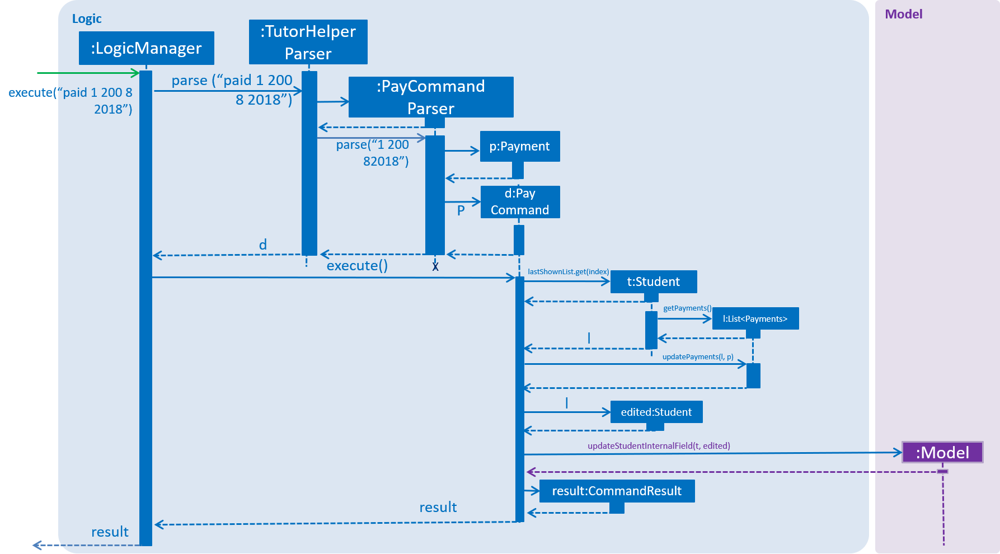

Overview
It is a Java sample application intended for Tutors who would like to organise their students' information. == Summary of contributions
-
Major enhancement: added the ability to edit existing syllabus entries
-
What it does: allows the user to edit existing syllabus entries.
-
Justification: Curriculum of subjects taught in schools change constantly, a tutor could update syllabus of a subject whenever there are changes and the app should provide a convenient way to edit them.
-
Highlights: Editing syllabus entries will cause changes in the database. The use of the editsyll command ensures that all other fields of student remains unedited.
-
-
Major enhancement: added the ability to edit existing payment entries
-
What it does: allows the user to edit existing payment entries using the same paid command.
-
Justification: Students could pay fees in installments or weekly instead of monthly, as such tutors may need to constantly edit payment entries for the month and the app should provide a convenient way to edit them.
-
Highlights: Editing payment entries will cause changes in the database. The use of the paid command looks for existing payment entries with the same month and year.
-
-
Minor enhancement:
-
Updating of test cases for new changes
-
XmlClasses for data writing into xml files for storage (Pull request #14)
-
-
Code contributed: https://nus-cs2103-ay1819s1.github.io/cs2103-dashboard/#=undefined&search=ongyz
-
Other contributions:
-
Project management:
-
Created issues for the different milestones and labelled them according to the severity and priority on Github.
-
-
Enhancements to existing features:
-
Documentation:
-
Community:
-
Reviewed other PRs
-
Reported bugs and suggestions for other teams in the class
-
-
Contributions to the User Guide
Given below are sections I contributed to the User Guide. They showcase my ability to write documentation targeting end-users. |
Edit Syllabus Topic : editsyll
Edits a syllabus topic for a specified student and subject.
Format: editsyll STUDENT_INDEX SUBJECT_INDEX SYLLABUS_INDEX sy/SYLLABUS
|
Editing a syllabus topic will automatically unmark it. |
Examples:
-
editsyll 1 1 2 sy/Integration
Changes the second syllabus topic of the first subject of the first student to "Integration". -
editsyll 3 1 1 sy/Kinetic Energy
Changes the first syllabus topic of the first subject of the third student to "Kinetic Energy".
Contributions to the Developer Guide
Given below are sections I contributed to the Developer Guide. They showcase my ability to write technical documentation and the technical depth of my contributions to the project. |
User Stories
-
As a busy tutor, I want to be able to manage my students' schedules individually, so that I can plan my time properly.
-
As a tutor, I want to be able to find out where my students live and what time I should be there for tuition.
-
As a tutor, I want to know my students' individual progress so that I know what topics I need to cover for the next tuition session.
-
As a tutor, I want to keep track of my students' payments so that i know who to collect fees from.
-
As a tutor, I want to keep track of my monthly earnings so that i can manage my financial accounts.
-
As a tutor, I want to be able to edit teaching data such as editing my syllabus to keep up with changes in school’s curriculum or updating payments made by students.
Edit Syllabus
Current Implementation
Classes that are related to edit syllabus and their functionality are as listed below:
* TutorHelperParser — Creates a EditSyllCommandParser object and calls parse method in object to parse user’s argument input.
* EditSyllCommandParser — Analyses the input, checks for any violation of syntax and returns a EditSyllCommand object with the student,subject,syllabus index object as well as the new Syllabus object as the argument.
* EditSyllCommand — Locates the corresponding syllabus to update and calls corresponding subject to edit syllabus.
* Subject — Locates and edits existing syllabus entry with new syllabus entry
Given below is an example usage scenario and how the earning mechanism behaves at each step.
Step 1. The tutor launches the application.
Step 2. He/she executes the command in the format editsyll STUDENT_INDEX SUBJECT_INDEX SYLLABUS_INDEX sy/SYLLABUS on the CLI.
Step 3. The arguments are parsed by EditSyllCommandParser, which produces an instance of EditSyllCommand.
Step 4. EditSyllCommand.execute() is called, and the syllabus at the specified subject index and syllabus index of the student at the specified student index is edited by TutorHelper.
The TutorHelper has to have at least 1 student as a precondition for editsyll.
|
The diagram below shows how the editsyll operation works:

Students edit payment feature
Current implementation
Classes that are related to edit Payment and their functionality are as listed below:
-
TutorHelperParser— Creates a PayCommandParser object and calls parse method in object to parse user’s argument input. -
PayCommandParser— Analyses the input, checks for any violation of syntax and returns a PayCommand object with the Payment object as the para. -
PayCommand— Calls on methods in VersionedTutorHelper to update new Payments made. -
Payment— -Contains fields to store student id, amount paid, month of payment and year of payment.
Given below is an example usage scenario and how the payment mechanism behaves at each step.
Step 1. The tutor launches the application and wants to edit a payment for his/her student called Alice.
Step 2. He/she makes a mental note of Alice’s student index as listed in the left side of the application.
Step 3. Lets say, Alice has student id 2. The payment that the tutor wants to update is $300 for the month and year of November 2018. He/she proceeds to key in the command in the following format: paid 2 300 11 2018
Step 4. Assuming that each argument given is a valid input, the system will perform the Payment command.
Step 5. The system will locate Alice from the student list.
Step 5a. The system will check that payment for the month and year of November 2018 has been recorded for Alice before, hence it will proceed to update the payment amount instead of creating a new payment entry.
Step 6. Now, payment details have been updated and the tutor will be able to see a successful edit payment message under the command box.
Step 7. The tutor may also choose to view the details from browser panel by clicking on Alice tab on the left. Payments will be displayed.
| Payment list will keep up to 5 payments at any one time. When the 6th payment is added, the payment list will remove the oldest payment record. |
| The maximum amount of payment that can be made each time is $10 000. |
The diagram below illustrates the sequence diagram.
